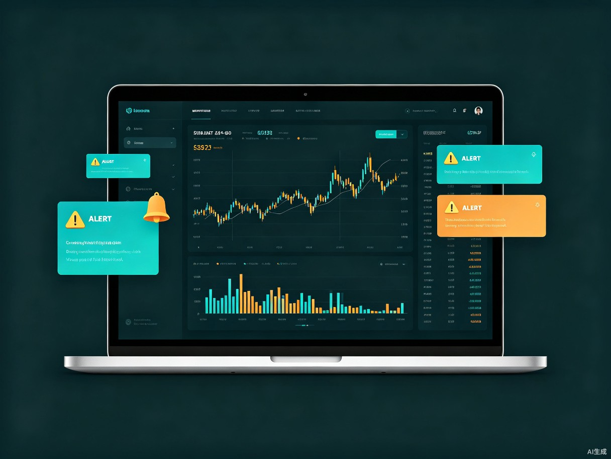

三大核心能力
覆盖盯盘、选股全流程，从实时监控到智能筛选，让交易决策更高效
智能盯盘预警
为任意股票设置价格、涨跌幅、成交量阈值，实时触发弹窗、声音、推送提醒
多维度条件选股
基于价格、涨跌幅、换手率、量比、市值等指标，手动配置筛选全市场股票
自然语言选股
输入口语化描述如"市盈率小于20的科技股"，AI 自动解析条件并返回结果

智能盯盘预警 实时监控
为自选股或任意 A 股设置多维度预警条件，行情触发时即时通知，支持多种提醒方式与冷却机制。
- 价格预警：设置价格上限/下限，突破即提醒
- 涨跌幅预警：当日涨幅或跌幅达到设定百分比触发
- 成交量突增：分钟成交量超过过去 N 日均量倍数时报警
- 多条件组合：支持价格且涨幅等 AND 条件同时满足才触发
- 灵活有效期：当日有效、永久有效或自定义时段
- 多种通知：弹窗、提示音、推送/短信（可选绑定）
- 冷却机制：同一预警可设 5 分钟内不重复提醒
- 预警管理：列表展示、启用/暂停/修改/删除、触发历史查询
多维度条件选股 全市场扫描
通过图形化界面配置筛选条件，系统扫描全市场约 5000 只 A 股，实时输出满足条件的股票列表。
- 价格指标：最新价区间、涨跌幅范围、振幅范围
- 成交量指标：换手率、量比（当日成交量/5日均量）
- 市值指标：总市值/流通市值范围
- 技术指标：与 5日/10日均线关系（后期扩展）
- 逻辑组合：支持多条件的"与/或"组合
- 手动扫描：点击即基于当前快照数据返回结果
- 自动监控：实时追踪，新满足条件的股票自动追加并提醒
- 结果交互：表格展示、点击看 K 线、加入自选、导出 CSV
自然语言选股
像聊天一样描述你的选股思路，AI 自动理解并执行
输入示例
"市值小于100亿且今天涨幅超过5%的创业板股票"
AI 解析结果
市值 < 100亿
AND
涨幅 > 5%
AND
板块 = 创业板
结构化条件 JSON
{
"conditions": [
{"field": "total_market_cap", "operator": "<", "value": 10000000000},
{"field": "change_pct", "operator": ">", "value": 5},
{"field": "board", "operator": "=", "value": "创业板"}
],
"logic": "AND"
}
NLU 核心能力
指标识别
价格、PE、PB、市值、成交量、均线、技术形态等
比较符理解
大于、小于、突破、跌破、放量、缩量、介于
时间描述
连续3天、近一周、本月、最近5日涨幅
板块/概念
新能源、半导体、芯片、银行、消费等
条件逻辑
且、或、排除等多条件组合
术语同义词
"市盈率"=PE，"低估值"映射为 PE<行业均值
工作台布局
四大区域高效协作，信息一目了然
左侧边栏
可折叠的自选股列表与预警列表
中央顶部
自然语言选股输入栏，醒目且带示例引导
中央主体
多标签页：选股结果、K线图、触发历史
右侧面板
条件选股手动配置面板，可收起
预警触发时，右下角滑入半透明提醒卡片，显示股票、条件、价格、时间，5 秒自动淡出
性能指标
低延迟、高可靠，为交易场景优化的技术保障
<500ms
行情数据推送延迟
<2s
全市场扫描（5000只）
<1s
自然语言解析响应
200+
同时监控预警数
5s
断线自动重连
100%
预警触发准确性
降级
大模型不可用本地兜底
产品路线图
持续迭代，从核心功能到完整生态
V1.0
核心股价预警、基础股价筛选、自然语言选股（大模型云端解析）
V1.1
移动端适配、语音输入、技术形态筛选（MACD 金叉等）
V1.2
自定义策略回测、模拟交易提醒联动